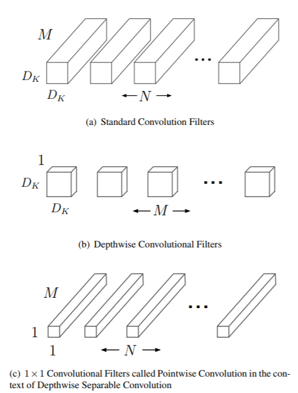
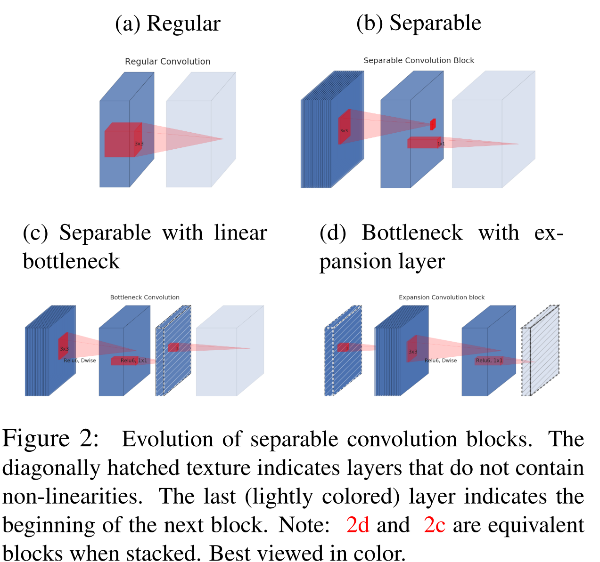
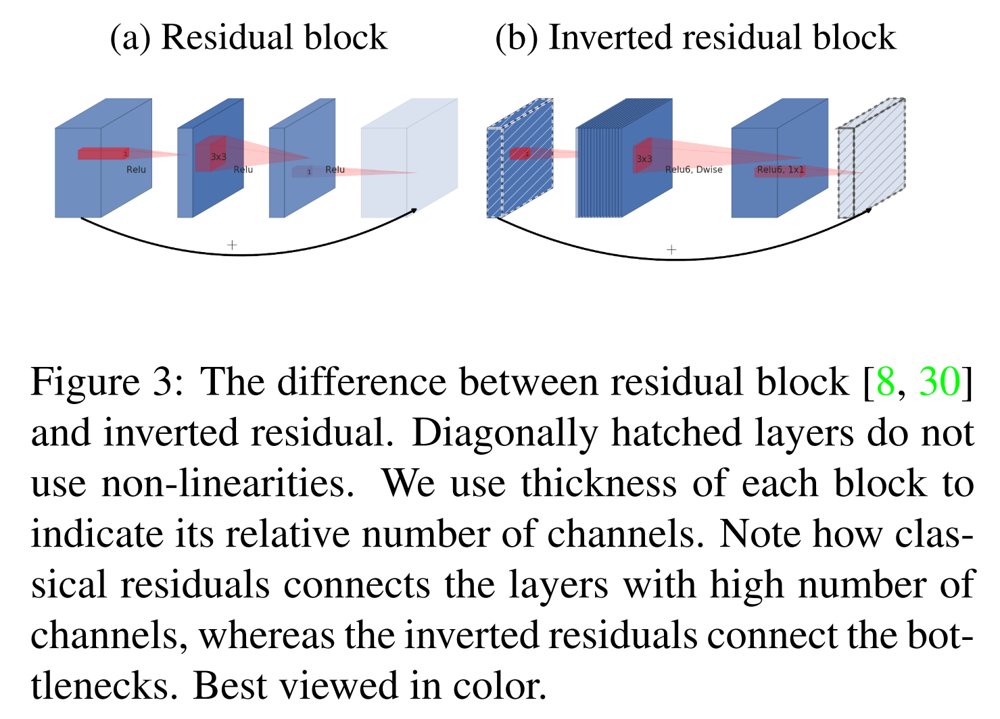
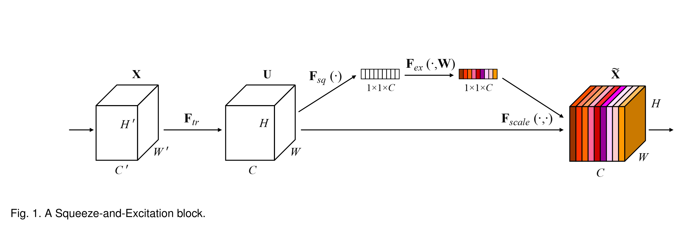
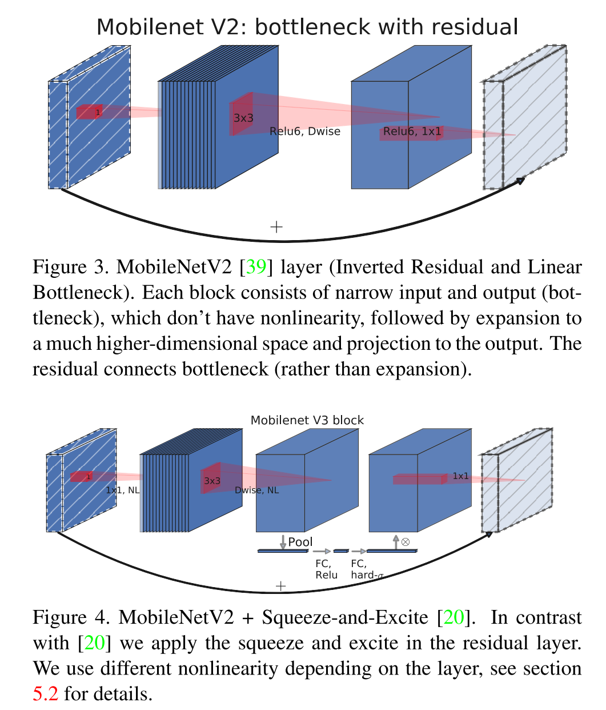

Mobile Nets¶
05-01-2021
This page contains my reading notes on
Standard 2D convolution layer (Preliminary)¶
Convolution layer takes as input \(M\) matrices (\(M\) input channels) of shape \(D_i \times D_i\), which can be seen as a 3D volume of size \(D_i \times D_i \times M\).
Each convolution layer consists of \(N\) sets of learnable weights (\(N\) filters or \(N\) output channels), each of which corresponds to a learnable bias. Each set of learnable weights (a filter) is a small 3D volume with size \(D\) and same depth as the input volume \(M\), i.e. \(M\) matrices of shape \(D \times D\).
The output activation of the convolution layer has the \(N\) matrices of shape \(D_o \times D_o\), which can also be seen as a 3D volume of size \(D_o \times D_o \times M\).
\(D_o\) is computed as:
\[ D_o = \frac{D_i - D}{S} + 1 \]
In the equation above, \(S\) is stride, which tells how many pixels the filter moves each time. The input matrices will usually be zero-padded to control the output size.
The animation below shows exactly how the output of a convolution layer is computed.
Standard 2D convolution layer (Preliminary)¶
Convolution layer takes as input \(M\) matrices (\(M\) input channels) of shape \(D_i \times D_i\), which can be seen as a 3D volume of size \(D_i \times D_i \times M\).
Each convolution layer consists of \(N\) sets of learnable weights (\(N\) filters or \(N\) output channels), each of which corresponds to a learnable bias. Each set of learnable weights (a filter) is a small 3D volume with size \(D\) and same depth as the input volume \(M\), i.e. \(M\) matrices of shape \(D \times D\).
The output activation of the convolution layer has the \(N\) matrices of shape \(D_o \times D_o\), which can also be seen as a 3D volume of size \(D_o \times D_o \times M\).
\(D_o\) is computed as:
\[ D_o = \frac{D_i - D}{S} + 1 \]
In the equation above, \(S\) is stride, which tells how many pixels the filter moves each time. The input matrices will usually be zero-padded to control the output size.
The animation below shows exactly how the output of a convolution layer is computed.
Depthwise separable convolution (MobileNetV1)¶
Instead of using the traditional convolution layers as the building blocks, MobileNetV1 uses layers called depthwise separable convolutions.
Each depthwise separable convolution consists of two layers:
Depthwise convolution layer: it has \(M\) separate filters of shape \(D \times D \times 1\), where the \(m\)th filter is applied to the \(m\)th input channel. This layer can also be thought to have 1 filter of shape \(D \times D \times M\), but the output channels will not be added together. In this way, the output size is \(D_o \times D_o \times M\).
Pointwise convolution layer: it has \(N\) separate filters of shape \(1 \times 1 \times M\). Each filter is doing a linear combination of the matrices (input channels) of the input volume, and thus \(N\) filters will have \(N\) matrices (output channels). It takes the output of depthwise convolution as the input, and the output of pointwise convolution has the shape of \(D_o \times D_o \times N\), just like the output of a standard convolution layer.
Each filter in a convolution layer both filters and combines inputs in one step. Depthwise separable convolution splits this into two layers: depthwise convolution does filtering while pointwise convolution combines.
Computational cost comparison:
Standard convolution layer (assuming stride is 1): \(D_i \times D_i \times D \times D \times M \times N\)
Depthwise convolution layer (assuming stride is 1): \(D_i \times D_i \times D \times D \times M\)
Pointwise convolution layer: \(D \times D \times M \times N\)
Thus the computation cost of depthwise separable convolution is less than that of the standard convolution layer:
\[ \frac{D_i \times D_i \times D \times D \times M + D \times D \times M \times N}{D_i \times D_i \times D \times D \times M \times N} = \frac{1}{N} + \frac{1}{D_i^2} \]

Inverted residual and linear bottleneck block (MobileNetV2)¶
The improvement of this layer over the depthwise separable convolution is based on the following two assumptions:
Although Non-linear activations (Relu) can increase representational complexity, it will result in information loss if the input doesn’t have lots of channels.
Activation maps are able to be encoded in low-dimensional subspaces (less channels).
An expansion layer is appended to the front of the depthwise separable convolution. If the input has the shape of \(D_i \times D_i \times M\), the expansion layer is a pointwise convolution layer that has \(tM\) filters of size \(1 \times 1 \times M\), where \(t\) is called expansion factor/ratio and should be larger than 1. The output will have the shape \(D_i \times D_i \times tM\). The layer expands the low-dimensional (less channels) input activation map to a higher-dimensional (more channels) space suited to non-linear activation functions.
Non-linear activation functions (Relu6) can only be applied to the high-dimensional activation maps. The last pointwise convolution layer projects the high-dimensional space back into low-dimensional space, so it can only have linear activation functions. Therefore, linear bottleneck block has three layers:
Expansion layer: \(tM\) filters of \(1 \times 1 \times M\), Relu6.
Depthwise convolution layer: 1 filter of \(D \times D \times tM\) (Dwise), Relu6.
Pointwise convolution layer: \(M'\) filters of \(1 \times 1 \times tM\), Linear.
If the initial and final activation maps of the block are of the same dimensions, a residual connection between the input and output of the block (between expansion layers from two consecutive blocks) is added to aid gradient flow during back-propagation, which is achieved by:
Depthwise convolution stride equals (\(S = 1\)).
Input and output channels are equal (\(M' = M\)).
The paper emphasizes that the connection is added between the expansion layers (inverted residual connection) instead of between depthwise convolution layer (residual connection), so that the connections are created between the low-dimensional activation maps.


Squeeze-and-Excite (MobileNetV3)¶
MobileNetV3 uses the block that modifies the inverted residual block by adding a Squeeze-and-Excite block between the depthwise convolution layer and pointwise convolution layer.
Given an input that has the shape \(D_i \times D_i \times M\), Squeeze-and-Excite block in the original paper consists of three parts:
Squeeze: apply global average pooling to the input, so that all information in each input channel is “squeezed” into a single channel descriptor. Each descriptor is a single value that summarizes each channel of the input. The output shape of this layer is \(1 \times 1 \times M\).
Excite: apply two fully connected layers to the output of the Squeeze layer. Use Relu activation function for the first layer and Sigmoid activation function for the second layer. The first layer contains \(\frac{M}{r}\) number of neurons, and thus the output of the first layer reduces the dimension by a reduction ratio \(r\). The second layer contains \(M\) number of neurons to restore the output dimension to be the same as the output of the Squeeze layer.
Scale: the \(M\) coefficients of the output of the Excite layer are timed with \(M\) channels of input of the block to form the output of the block.

